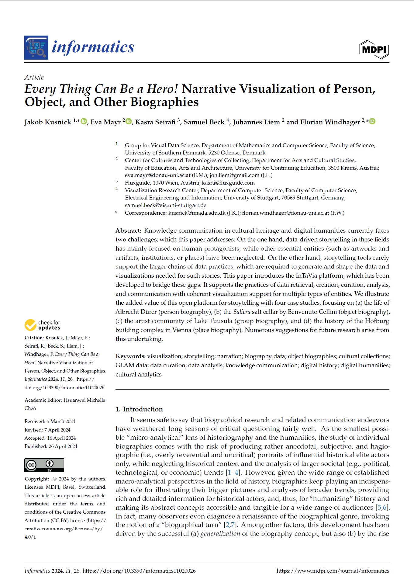

Every Thing Can Be a Hero! Narrative Visualization of Person, Object, and Other Biographies


Authors. Jakob Kusnick, Eva Mayr, Kasra Seirafi, Samuel Beck, Johannes Liem, Florian Windhager
Venue. informatics (2024)
Abstract. Knowledge communication in cultural heritage and digital humanities currently faces two challenges, which this paper addresses: On the one hand, data-driven storytelling in these fields has mainly focused on human protagonists, while other essential entities (such as artworks and artifacts, institutions, or places) have been neglected. On the other hand, storytelling tools rarely support the larger chains of data practices, which are required to generate and shape the data and visualizations needed for such stories. This paper introduces the InTaVia platform, which has been developed to bridge these gaps. It supports the practices of data retrieval, creation, curation, analysis, and communication with coherent visualization support for multiple types of entities. We illustrate the added value of this open platform for storytelling with four case studies, focusing on (a) the life of Albrecht Dürer (person biography), (b) the Saliera salt cellar by Benvenuto Cellini (object biography), (c) the artist community of Lake Tuusula (group biography), and (d) the history of the Hofburg building complex in Vienna (place biography). Numerous suggestions for future research arise from this undertaking.